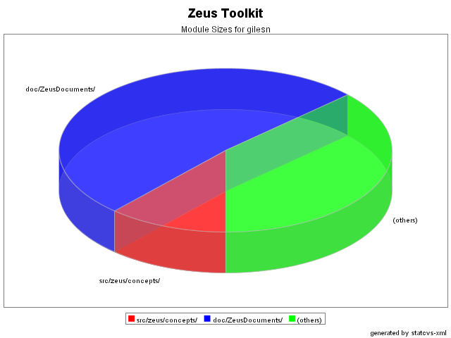
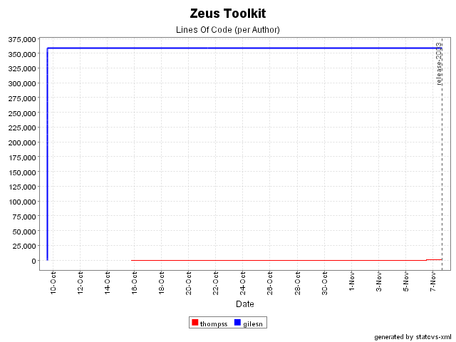
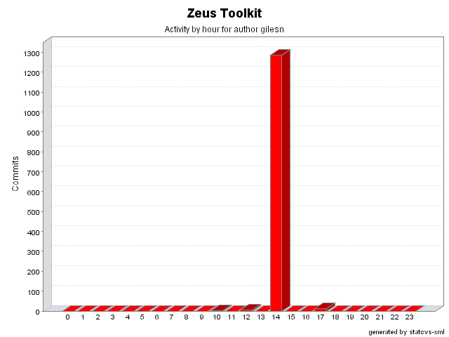
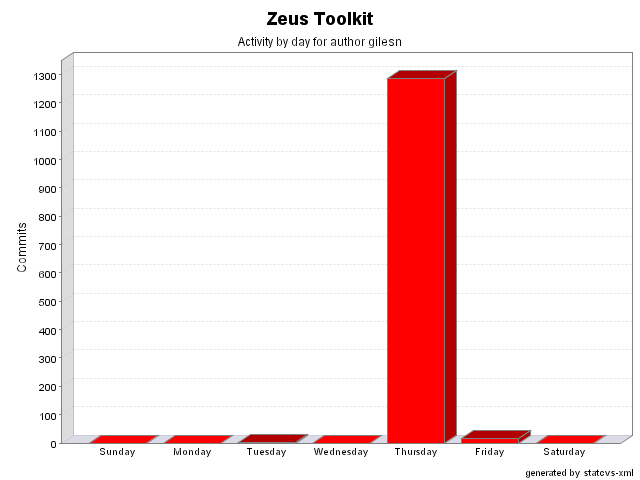

Project Documentation
About Zeus Toolkit
Project Info
Project Reports
Development Process
General Statistics for gilesn
Total changes: 1,303
Lines of code: 359,433
Modules

Lines Of Code

Activity By Time


Commit Log
Date
Author
File/Message
07/11/03 17:04
gilesn
Separating Jade Source from Zeus source and setting up installer
(12 Files changed, 941 Lines changed)
.zeus.prp 1.2
(+1 -1)
README NOW.TXT 1.4
(+14 -19)
bin/recompile.bat 1.3
(+1 -1)
etc/build.xml 1.3
(+28 -12)
etc/zeus.nsi 1.1
added 85
lib/icu4j.jar 1.2
removed
lib/jade.jar 1.1
added
lib/jena.jar 1.2
removed
lib/zeus.jar 1.5
(+0 -0)
licenses/licence.html 1.2
removed
licenses/license.html 1.1
added 418
licenses/license.txt 1.1
added 394
07/11/03 12:58
gilesn
Converting XML parsing from JAXB to DOM
(5 Files changed, 336 Lines changed)
src/zeus/agents/ACC.java 1.2
(+27 -32)
src/zeus/concepts/xmlobject/Parser.java 1.1
added 170
src/zeus/concepts/xmlobject/acc/Contact.java 1.2
(+33 -161)
src/zeus/concepts/xmlobject/acc/Contacts.java 1.2
(+35 -147)
src/zeus/concepts/xmlobject/acc/ContactsParser.java 1.1
added 71
21/10/03 10:23
gilesn
21/10/03 - Nick Giles - Replacing parameterisation in make batch file
(1 Files changed, 1 Lines changed)
bin/make.bat 1.3
(+1 -1)
09/10/03 14:04
gilesn
09/10/03 - Nick Giles - Changing comment to open source
(1 Files changed, 2 Lines changed)
etc/build.xml 1.2
(+2 -2)
09/10/03 14:00
gilesn
Initial revision
(1284 Files changed, 358153 Lines changed)
bin/clean.bat 1.1
added 2
bin/make.bat 1.1
added 9
bin/recompile.bat 1.1
added 2
doc/getting-started.txt 1.1
added 64
doc/licence.html 1.1
added 418
doc/original_zeus_files.txt 1.1
added 578
doc/readme.html 1.1
added 384
doc/ZeusDocuments/FIPA&Zeus.doc 1.1
added
doc/ZeusDocuments/FIPA&Zeus.pdf 1.1
added
doc/ZeusDocuments/Zconcepts.doc 1.1
added
doc/ZeusDocuments/Zconcepts.pdf 1.1
added
doc/ZeusDocuments/Zeus-CaseStudy lesson one.pdf 1.1
added
doc/ZeusDocuments/Zeus-CaseStudy1.doc 1.1
added
doc/ZeusDocuments/Zeus-CaseStudy1.pdf 1.1
added
doc/ZeusDocuments/Zeus-CaseStudy2.doc 1.1
added
doc/ZeusDocuments/Zeus-CaseStudy2.pdf 1.1
added
doc/ZeusDocuments/Zeus-CaseStudy3.doc 1.1
added
doc/ZeusDocuments/Zeus-CaseStudy3.pdf 1.1
added
doc/ZeusDocuments/Zeus-CaseStudylesson1-1a.doc 1.1
added
doc/ZeusDocuments/Zeus-Role-Model-Guide.doc 1.1
added
doc/ZeusDocuments/Zeus-Role-Model-Guide.pdf 1.1
added
doc/ZeusDocuments/Zeus-Runtime-Guide.doc 1.1
added
doc/ZeusDocuments/Zeus-Runtime-Guide.pdf 1.1
added
doc/ZeusDocuments/Zeus-TechManual.doc 1.1
added
doc/ZeusDocuments/Zeus-TechManual.pdf 1.1
added
doc/ZeusDocuments/Zeus-Web Services Features.pdf 1.1
added
doc/ZeusDocuments/Zsh.doc 1.1
added
doc/ZeusDocuments/Zsh.pdf 1.1
added
doc/ZeusDocuments/agentRealisation.doc 1.1
added
doc/ZeusDocuments/agentRealisation.pdf 1.1
added
doc/ZeusDocuments/documents.html 1.1
added 146
doc/ZeusDocuments/read_me.txt 1.1
added 38
doc/ZeusDocuments/temp.doc 1.1
added
doc/ZeusDocuments/zeus.css 1.1
added 314
doc/ZeusDocuments/zeus.mdl 1.1
added 184695
doc/ZeusDocuments/images/bt.gif 1.1
added
doc/ZeusDocuments/images/doczip.gif 1.1
added
doc/ZeusDocuments/images/onlinebook.gif 1.1
added
doc/ZeusDocuments/images/pdf.gif 1.1
added
doc/ZeusDocuments/images/pdficon.gif 1.1
added
doc/ZeusDocuments/images/pszip.gif 1.1
added
doc/ZeusDocuments/realisation-guide/TOC.html 1.1
added 119
doc/ZeusDocuments/realisation-guide/part1.html 1.1
added 251
doc/ZeusDocuments/realisation-guide/part2.html 1.1
added 286
doc/ZeusDocuments/realisation-guide/part3.html 1.1
added 1559
doc/ZeusDocuments/realisation-guide/part4.html 1.1
added 350
doc/ZeusDocuments/realisation-guide/part5.html 1.1
added 175
doc/ZeusDocuments/realisation-guide/part6.html 1.1
added 713
doc/ZeusDocuments/realisation-guide/zeusdoc.css 1.1
added 314
doc/ZeusDocuments/realisation-guide/gfx/btlogo.png 1.1
added
doc/ZeusDocuments/realisation-guide/gfx/figure1-1.gif 1.1
added
doc/ZeusDocuments/realisation-guide/gfx/figure2-2.gif 1.1
added
doc/ZeusDocuments/realisation-guide/gfx/figure3-1.gif 1.1
added
doc/ZeusDocuments/realisation-guide/gfx/figure3-11.gif 1.1
added
doc/ZeusDocuments/realisation-guide/gfx/figure3-4.gif 1.1
added
doc/ZeusDocuments/realisation-guide/gfx/figure6-1.gif 1.1
added
doc/ZeusDocuments/realisation-guide/gfx/figure6-5.gif 1.1
added
doc/ZeusDocuments/realisation-guide/gfx/image007.gif 1.1
added
doc/ZeusDocuments/realisation-guide/gfx/image009.gif 1.1
added
doc/ZeusDocuments/realisation-guide/gfx/image010.gif 1.1
added
doc/ZeusDocuments/realisation-guide/gfx/image011.gif 1.1
added
doc/ZeusDocuments/realisation-guide/gfx/image014.gif 1.1
added
doc/ZeusDocuments/realisation-guide/gfx/image015.gif 1.1
added
doc/ZeusDocuments/realisation-guide/gfx/image016.gif 1.1
added
doc/ZeusDocuments/realisation-guide/gfx/image017.gif 1.1
added
doc/ZeusDocuments/realisation-guide/gfx/image018.gif 1.1
added
doc/ZeusDocuments/realisation-guide/gfx/image020.gif 1.1
added
doc/ZeusDocuments/realisation-guide/gfx/image021.gif 1.1
added
doc/ZeusDocuments/realisation-guide/gfx/image022.gif 1.1
added
doc/ZeusDocuments/realisation-guide/gfx/image026.gif 1.1
added
doc/ZeusDocuments/realisation-guide/gfx/image027.gif 1.1
added
doc/ZeusDocuments/realisation-guide/gfx/image028.gif 1.1
added
doc/ZeusDocuments/realisation-guide/gfx/image030.gif 1.1
added
doc/ZeusDocuments/realisation-guide/gfx/image031.gif 1.1
added
doc/ZeusDocuments/realisation-guide/gfx/image033.gif 1.1
added
doc/ZeusDocuments/realisation-guide/gfx/image034.gif 1.1
added
doc/ZeusDocuments/realisation-guide/gfx/image036.gif 1.1
added
doc/ZeusDocuments/realisation-guide/gfx/image037.gif 1.1
added
doc/ZeusDocuments/realisation-guide/gfx/image041.gif 1.1
added
doc/ZeusDocuments/realisation-guide/gfx/image042.gif 1.1
added
doc/ZeusDocuments/realisation-guide/gfx/image044.gif 1.1
added
doc/ZeusDocuments/realisation-guide/gfx/image046.gif 1.1
added
doc/ZeusDocuments/realisation-guide/gfx/image048.gif 1.1
added
doc/ZeusDocuments/realisation-guide/gfx/image049.gif 1.1
added
doc/ZeusDocuments/realisation-guide/gfx/image050.gif 1.1
added
doc/ZeusDocuments/realisation-guide/gfx/image051.gif 1.1
added
doc/ZeusDocuments/realisation-guide/gfx/image053.gif 1.1
added
doc/ZeusDocuments/realisation-guide/gfx/image055.gif 1.1
added
doc/ZeusDocuments/realisation-guide/gfx/image056.gif 1.1
added
doc/ZeusDocuments/realisation-guide/gfx/image058.gif 1.1
added
doc/ZeusDocuments/realisation-guide/gfx/image059.gif 1.1
added
doc/ZeusDocuments/realisation-guide/gfx/image060.gif 1.1
added
doc/ZeusDocuments/realisation-guide/gfx/image062.gif 1.1
added
doc/ZeusDocuments/realisation-guide/gfx/image064.gif 1.1
added
doc/ZeusDocuments/realisation-guide/gfx/image065.gif 1.1
added
doc/ZeusDocuments/realisation-guide/gfx/image066.gif 1.1
added
doc/ZeusDocuments/realisation-guide/gfx/image067.gif 1.1
added
doc/ZeusDocuments/realisation-guide/gfx/image067a.gif 1.1
added
doc/ZeusDocuments/realisation-guide/gfx/image069.gif 1.1
added
doc/ZeusDocuments/realisation-guide/gfx/image070.gif 1.1
added
doc/ZeusDocuments/realisation-guide/gfx/image071.gif 1.1
added
doc/ZeusDocuments/realisation-guide/gfx/image072.gif 1.1
added
doc/ZeusDocuments/realisation-guide/gfx/image074.gif 1.1
added
doc/ZeusDocuments/realisation-guide/gfx/image075.gif 1.1
added
doc/ZeusDocuments/realisation-guide/gfx/image077.gif 1.1
added
doc/ZeusDocuments/realisation-guide/gfx/image078.gif 1.1
added
doc/ZeusDocuments/realisation-guide/gfx/image080.gif 1.1
added
doc/ZeusDocuments/realisation-guide/gfx/image082.gif 1.1
added
doc/ZeusDocuments/realisation-guide/gfx/image084.gif 1.1
added
doc/ZeusDocuments/realisation-guide/gfx/image086.gif 1.1
added
doc/ZeusDocuments/realisation-guide/gfx/image087.gif 1.1
added
doc/ZeusDocuments/realisation-guide/gfx/image088.gif 1.1
added
doc/ZeusDocuments/realisation-guide/gfx/image089.gif 1.1
added
doc/ZeusDocuments/realisation-guide/gfx/image092.gif 1.1
added
doc/ZeusDocuments/realisation-guide/gfx/image094.gif 1.1
added
doc/ZeusDocuments/realisation-guide/gfx/image098.gif 1.1
added
doc/ZeusDocuments/realisation-guide/gfx/image099.gif 1.1
added
doc/ZeusDocuments/realisation-guide/gfx/image101.gif 1.1
added
doc/ZeusDocuments/realisation-guide/gfx/image104.gif 1.1
added
doc/ZeusDocuments/realisation-guide/gfx/image107.gif 1.1
added
doc/ZeusDocuments/realisation-guide/gfx/image110.gif 1.1
added
doc/ZeusDocuments/realisation-guide/gfx/image113.gif 1.1
added
doc/ZeusDocuments/realisation-guide/gfx/sourcecode.gif 1.1
added
doc/ZeusDocuments/realisation-guide/gfx/zeus.gif 1.1
added
doc/ZeusDocuments/techmanual/TOC.html 1.1
added 82
doc/ZeusDocuments/techmanual/part1.html 1.1
added 238
doc/ZeusDocuments/techmanual/part2.html 1.1
added 169
doc/ZeusDocuments/techmanual/part3.html 1.1
added 396
doc/ZeusDocuments/techmanual/part4.html 1.1
added 457
doc/ZeusDocuments/techmanual/part5.html 1.1
added 579
doc/ZeusDocuments/techmanual/part6.html 1.1
added 501
doc/ZeusDocuments/techmanual/part7.html 1.1
added 115
doc/ZeusDocuments/techmanual/refs.html 1.1
added 25
doc/ZeusDocuments/techmanual/zeusdoc.css 1.1
added 314
doc/ZeusDocuments/techmanual/gfx/achieve-graph.gif 1.1
added
doc/ZeusDocuments/techmanual/gfx/components.gif 1.1
added
doc/ZeusDocuments/techmanual/gfx/diary.gif 1.1
added
doc/ZeusDocuments/techmanual/gfx/figure1-1.gif 1.1
added
doc/ZeusDocuments/techmanual/gfx/image022.gif 1.1
added
doc/ZeusDocuments/techmanual/gfx/image024.gif 1.1
added
doc/ZeusDocuments/techmanual/gfx/image026.gif 1.1
added
doc/ZeusDocuments/techmanual/gfx/image028.gif 1.1
added
doc/ZeusDocuments/techmanual/gfx/image030.gif 1.1
added
doc/ZeusDocuments/techmanual/gfx/image034.gif 1.1
added
doc/ZeusDocuments/techmanual/gfx/image036.gif 1.1
added
doc/ZeusDocuments/techmanual/gfx/image038.gif 1.1
added
doc/ZeusDocuments/techmanual/gfx/image040.gif 1.1
added
doc/ZeusDocuments/techmanual/gfx/image042.gif 1.1
added
doc/ZeusDocuments/techmanual/gfx/image044.gif 1.1
added
doc/ZeusDocuments/techmanual/gfx/image046.gif 1.1
added
doc/ZeusDocuments/techmanual/gfx/image048.gif 1.1
added
doc/ZeusDocuments/techmanual/gfx/internals.gif 1.1
added
doc/ZeusDocuments/techmanual/gfx/utilitystart.gif 1.1
added
doc/ZeusDocuments/techmanual/gfx/zeus.gif 1.1
added
etc/build.xml 1.1
added 72
lib/ant.jar 1.1
added
lib/gnu-regexp.jar 1.1
added
lib/icu4j.jar 1.1
added
lib/jaxb-rt-1.0-ea.jar 1.1
added
lib/jaxb-xjc-1.0-ea.jar 1.1
added
lib/jena.jar 1.1
added
lib/zeus.jar 1.1
added
src/FIPA/AgentID.java 1.1
added 32
src/FIPA/AgentIDHelper.java 1.1
added 114
src/FIPA/AgentIDHolder.java 1.1
added 38
src/FIPA/AgentIDsHelper.java 1.1
added 62
src/FIPA/AgentIDsHolder.java 1.1
added 39
src/FIPA/DateTime.java 1.1
added 54
src/FIPA/DateTimeHelper.java 1.1
added 126
src/FIPA/DateTimeHolder.java 1.1
added 40
src/FIPA/Envelope.java 1.1
added 46
src/FIPA/EnvelopeHelper.java 1.1
added 174
src/FIPA/EnvelopeHolder.java 1.1
added 38
src/FIPA/EnvelopesHelper.java 1.1
added 62
src/FIPA/EnvelopesHolder.java 1.1
added 39
src/FIPA/FipaMessage.java 1.1
added 26
src/FIPA/FipaMessageHelper.java 1.1
added 86
src/FIPA/FipaMessageHolder.java 1.1
added 38
src/FIPA/MTS.java 1.1
added 13
src/FIPA/MTSHelper.java 1.1
added 68
src/FIPA/MTSHolder.java 1.1
added 38
src/FIPA/MTSOperations.java 1.1
added 14
src/FIPA/OptAgentIDHelper.java 1.1
added 66
src/FIPA/OptAgentIDHolder.java 1.1
added 39
src/FIPA/OptDateTimeHelper.java 1.1
added 66
src/FIPA/OptDateTimeHolder.java 1.1
added 39
src/FIPA/OptReceivedObjectHelper.java 1.1
added 66
src/FIPA/OptReceivedObjectHolder.java 1.1
added 39
src/FIPA/OptTransportBehaviourTypeHelper.java 1.1
added 68
src/FIPA/OptTransportBehaviourTypeHolder.java 1.1
added 39
src/FIPA/PayloadHelper.java 1.1
added 60
src/FIPA/PayloadHolder.java 1.1
added 39
src/FIPA/Property.java 1.1
added 28
src/FIPA/PropertyHelper.java 1.1
added 84
src/FIPA/PropertyHolder.java 1.1
added 40
src/FIPA/ReceivedObject.java 1.1
added 32
src/FIPA/ReceivedObjectHelper.java 1.1
added 105
src/FIPA/ReceivedObjectHolder.java 1.1
added 38
src/FIPA/TransportBehaviourTypeHelper.java 1.1
added 62
src/FIPA/TransportBehaviourTypeHolder.java 1.1
added 39
src/FIPA/URLHelper.java 1.1
added 58
src/FIPA/_MTSImplBase.java 1.1
added 62
src/FIPA/_MTSStub.java 1.1
added 74
src/FIPA/stringsHelper.java 1.1
added 62
src/FIPA/stringsHolder.java 1.1
added 39
src/JADE_SL/ACLMessage.java 1.1
added 1024
src/JADE_SL/AID.java 1.1
added 417
src/JADE_SL/AgentAction.java 1.1
added 33
src/JADE_SL/Base64.java 1.1
added 264
src/JADE_SL/CaseInsensitiveString.java 1.1
added 109
src/JADE_SL/Concept.java 1.1
added 33
src/JADE_SL/ContentElement.java 1.1
added 31
src/JADE_SL/ContentElementList.java 1.1
added 134
src/JADE_SL/ContentManager.jade 1.1
added 303
src/JADE_SL/FIPANames.java 1.1
added 100
src/JADE_SL/ISO8601.java 1.1
added 165
src/JADE_SL/OntoACLMessage.jade 1.1
added 135
src/JADE_SL/OntoACLMessage.java 1.1
added 133
src/JADE_SL/OntoAID.jade 1.1
added 99
src/JADE_SL/OntoAID.java 1.1
added 98
src/JADE_SL/Predicate.java 1.1
added 33
src/JADE_SL/StringACLCodec.java 1.1
added 323
src/JADE_SL/Term.java 1.1
added 32
src/JADE_SL/UnreadableException.java 1.1
added 45
src/JADE_SL/WrapperException.java 1.1
added 73
src/JADE_SL/abs/AbsAgentAction.java 1.1
added 53
src/JADE_SL/abs/AbsAggregate.java 1.1
added 240
src/JADE_SL/abs/AbsConcept.java 1.1
added 65
src/JADE_SL/abs/AbsContentElement.java 1.1
added 32
src/JADE_SL/abs/AbsContentElementList.java 1.1
added 204
src/JADE_SL/abs/AbsHelper.java 1.1
added 333
src/JADE_SL/abs/AbsIRE.java 1.1
added 93
src/JADE_SL/abs/AbsObject.java 1.1
added 67
src/JADE_SL/abs/AbsObjectImpl.java 1.1
added 186
src/JADE_SL/abs/AbsPredicate.java 1.1
added 63
src/JADE_SL/abs/AbsPrimitive.java 1.1
added 381
src/JADE_SL/abs/AbsPrimitiveSlotsHolder.java 1.1
added 242
src/JADE_SL/abs/AbsTerm.java 1.1
added 32
src/JADE_SL/abs/AbsVariable.java 1.1
added 110
src/JADE_SL/acl/CommunicativeActBase.java 1.1
added 100
src/JADE_SL/acl/Inform.java 1.1
added 63
src/JADE_SL/acl/Request.java 1.1
added 63
src/JADE_SL/lang/ByteArrayCodec.java 1.1
added 83
src/JADE_SL/lang/Codec.java 1.1
added 92
src/JADE_SL/lang/StringCodec.java 1.1
added 84
src/JADE_SL/lang/sl/ASCII_CharStream.java 1.1
added 377
src/JADE_SL/lang/sl/ParseException.java 1.1
added 191
src/JADE_SL/lang/sl/SLCodec.java 1.1
added 392
src/JADE_SL/lang/sl/SLOntology.java 1.1
added 64
src/JADE_SL/lang/sl/SLParser.java 1.1
added 934
src/JADE_SL/lang/sl/SLParser.jj 1.1
added 587
src/JADE_SL/lang/sl/SLParserConstants.java 1.1
added 71
src/JADE_SL/lang/sl/SLParserTokenManager.java 1.1
added 1246
src/JADE_SL/lang/sl/Token.java 1.1
added 81
src/JADE_SL/lang/sl/TokenMgrError.java 1.1
added 133
src/JADE_SL/onto/ACLOntology.java 1.1
added 94
src/JADE_SL/onto/BCReflectiveIntrospector.java 1.1
added 341
src/JADE_SL/onto/BasicIntrospector.java 1.1
added 237
src/JADE_SL/onto/BasicOntology.java 1.1
added 198
src/JADE_SL/onto/Introspectable.java 1.1
added 53
src/JADE_SL/onto/Introspector.java 1.1
added 80
src/JADE_SL/onto/MicroIntrospector.java 1.1
added 141
src/JADE_SL/onto/Ontology.java 1.1
added 549
src/JADE_SL/onto/OntologyException.java 1.1
added 51
src/JADE_SL/onto/ReflectiveIntrospector.java 1.1
added 248
src/JADE_SL/onto/UngroundedException.java 1.1
added 46
src/JADE_SL/onto/UnknownSchemaException.java 1.1
added 46
src/JADE_SL/onto/WrapperException.java 1.1
added 73
src/JADE_SL/onto/basic/Action.java 1.1
added 83
src/JADE_SL/onto/basic/Done.java 1.1
added 50
src/JADE_SL/onto/basic/Equals.java 1.1
added 73
src/JADE_SL/onto/basic/Result.java 1.1
added 63
src/JADE_SL/onto/basic/TrueProposition.java 1.1
added 30
src/JADE_SL/schema/AgentActionSchema.java 1.1
added 143
src/JADE_SL/schema/AggregateSchema.java 1.1
added 130
src/JADE_SL/schema/ConceptSchema.java 1.1
added 174
src/JADE_SL/schema/ContentElementListSchema.java 1.1
added 112
src/JADE_SL/schema/ContentElementSchema.java 1.1
added 89
src/JADE_SL/schema/Facet.java 1.1
added 44
src/JADE_SL/schema/IRESchema.java 1.1
added 146
src/JADE_SL/schema/ObjectSchema.java 1.1
added 492
src/JADE_SL/schema/PredicateSchema.java 1.1
added 160
src/JADE_SL/schema/PrimitiveSchema.java 1.1
added 106
src/JADE_SL/schema/TermSchema.java 1.1
added 92
src/JADE_SL/schema/VariableSchema.java 1.1
added 131
src/JADE_SL/schema/facets/CardinalityFacet.java 1.1
added 73
src/JADE_SL/schema/facets/TypedAggregateFacet.java 1.1
added 70
src/fipa97/FIPA_Agent_97.java 1.1
added 11
src/fipa97/FIPA_Agent_97Helper.java 1.1
added 66
src/fipa97/FIPA_Agent_97Holder.java 1.1
added 38
src/fipa97/FIPA_Agent_97Operations.java 1.1
added 13
src/fipa97/_FIPA_Agent_97ImplBase.java 1.1
added 60
src/fipa97/_FIPA_Agent_97Stub.java 1.1
added 72
src/javax/agent/Envelope.java 1.1
added 29
src/javax/agent/Identifier.java 1.1
added 28
src/javax/agent/JasException.java 1.1
added 34
src/javax/agent/Name.java 1.1
added 28
src/javax/agent/service/TimeoutException.java 1.1
added 30
src/javax/agent/service/Transport.java 1.1
added 65
src/sl/AID.java 1.1
added 337
src/sl/ASCII_UCodeESC_CharStream.java 1.1
added 520
src/sl/Action.java 1.1
added 87
src/sl/AnOntology.java 1.1
added 44
src/sl/BasicOntology.java 1.1
added 153
src/sl/CaseInsensitiveString.java 1.1
added 99
src/sl/Codec.java 1.1
added 67
src/sl/CodecException.java 1.1
added 61
src/sl/DefaultOntology.java 1.1
added 868
src/sl/DonePredicate.java 1.1
added 55
src/sl/FalseProposition.java 1.1
added 38
src/sl/Frame.java 1.1
added 167
src/sl/FrameSchema.java 1.1
added 119
src/sl/ISO8601.java 1.1
added 165
src/sl/JADEMetaOntology.java 1.1
added 103
src/sl/Not.java 1.1
added 48
src/sl/Ontology.java 1.1
added 498
src/sl/OntologyException.java 1.1
added 65
src/sl/ParseException.java 1.1
added 191
src/sl/ResultPredicate.java 1.1
added 70
src/sl/Role.java 1.1
added 43
src/sl/SL0Codec.java 1.1
added 93
src/sl/SL0Encoder.java 1.1
added 119
src/sl/SL0Parser.java 1.1
added 505
src/sl/SL0Parser.jj 1.1
added 308
src/sl/SL0ParserConstants.java 1.1
added 40
src/sl/SL0ParserTokenManager.java 1.1
added 796
src/sl/Slot.java 1.1
added 44
src/sl/SlotDescriptor.java 1.1
added 180
src/sl/Token.java 1.1
added 81
src/sl/TokenMgrError.java 1.1
added 133
src/sl/TrueProposition.java 1.1
added 38
src/zeus/actors/AbilityDb.java 1.1
added 351
src/zeus/actors/ActionNode.java 1.1
added 85
src/zeus/actors/AgentContext.java 1.1
added 246
src/zeus/actors/AttributeNode.java 1.1
added 72
src/zeus/actors/Connection.java 1.1
added 211
src/zeus/actors/ConnectionPool.java 1.1
added 50
src/zeus/actors/ConsumedDb.java 1.1
added 459
src/zeus/actors/DataRec.java 1.1
added 235
src/zeus/actors/Decomposition.java 1.1
added 738
src/zeus/actors/EffectChain.java 1.1
added 91
src/zeus/actors/ExecutionMonitor.java 1.1
added 154
src/zeus/actors/ExternalDb.java 1.1
added 72
src/zeus/actors/Handler.java 1.1
added 20
src/zeus/actors/InTray.java 1.1
added 40
src/zeus/actors/MailBox.java 1.1
added 467
src/zeus/actors/MsgHandler.java 1.1
added 1008
src/zeus/actors/MsgNode.java 1.1
added 72
src/zeus/actors/OrganisationDb.java 1.1
added 329
src/zeus/actors/OutTray.java 1.1
added 31
src/zeus/actors/PlanDb.java 1.1
added 80
src/zeus/actors/PlanRecord.java 1.1
added 1313
src/zeus/actors/Planner.java 1.1
added 1496
src/zeus/actors/PostMan.java 1.1
added 274
src/zeus/actors/PostManConnectionPool.java 1.1
added 65
src/zeus/actors/PreconditionChain.java 1.1
added 79
src/zeus/actors/ProducedDb.java 1.1
added 652
src/zeus/actors/ProtocolDb.java 1.1
added 465
src/zeus/actors/ProtocolDbResult.java 1.1
added 62
src/zeus/actors/ResourceDb.java 1.1
added 914
src/zeus/actors/RootNode.java 1.1
added 71
src/zeus/actors/Server.java 1.1
added 253
src/zeus/actors/TaskContext.java 1.1
added 125
src/zeus/actors/TaskDb.java 1.1
added 682
src/zeus/actors/TaskExternal.java 1.1
added 30
src/zeus/actors/ZeusAgentContext.java 1.1
added 494
src/zeus/actors/ZeusTask.java 1.1
added 205
src/zeus/actors/event/AbilityAdapter.java 1.1
added 31
src/zeus/actors/event/AbilityEvent.java 1.1
added 47
src/zeus/actors/event/AbilityMonitor.java 1.1
added 33
src/zeus/actors/event/AgentAdapter.java 1.1
added 31
src/zeus/actors/event/AgentEvent.java 1.1
added 40
src/zeus/actors/event/AgentMonitor.java 1.1
added 31
src/zeus/actors/event/ArcAdapter.java 1.1
added 31
src/zeus/actors/event/ArcEvent.java 1.1
added 50
src/zeus/actors/event/ArcMonitor.java 1.1
added 31
src/zeus/actors/event/ClockAdapter.java 1.1
added 28
src/zeus/actors/event/ClockEvent.java 1.1
added 36
src/zeus/actors/event/ClockMonitor.java 1.1
added 28
src/zeus/actors/event/ConversationAdapter.java 1.1
added 29
src/zeus/actors/event/ConversationEvent.java 1.1
added 76
src/zeus/actors/event/ConversationMonitor.java 1.1
added 29
src/zeus/actors/event/Event.java 1.1
added 182
src/zeus/actors/event/FactAdapter.java 1.1
added 31
src/zeus/actors/event/FactEvent.java 1.1
added 40
src/zeus/actors/event/FactMonitor.java 1.1
added 31
src/zeus/actors/event/GraphAdapter.java 1.1
added 30
src/zeus/actors/event/GraphEvent.java 1.1
added 40
src/zeus/actors/event/GraphMonitor.java 1.1
added 30
src/zeus/actors/event/MessageAdapter.java 1.1
added 31
src/zeus/actors/event/MessageEvent.java 1.1
added 50
src/zeus/actors/event/MessageHandlerAdapter.java 1.1
added 31
src/zeus/actors/event/MessageHandlerEvent.java 1.1
added 88
src/zeus/actors/event/MessageHandlerMonitor.java 1.1
added 31
src/zeus/actors/event/MessageMonitor.java 1.1
added 31
src/zeus/actors/event/NodeAdapter.java 1.1
added 30
src/zeus/actors/event/NodeEvent.java 1.1
added 57
src/zeus/actors/event/NodeMonitor.java 1.1
added 30
src/zeus/actors/event/PlanStepAdapter.java 1.1
added 30
src/zeus/actors/event/PlanStepEvent.java 1.1
added 45
src/zeus/actors/event/PlanStepMonitor.java 1.1
added 30
src/zeus/actors/event/PlanningAdapter.java 1.1
added 30
src/zeus/actors/event/PlanningEvent.java 1.1
added 47
src/zeus/actors/event/PlanningMonitor.java 1.1
added 30
src/zeus/actors/event/ProtocolAdapter.java 1.1
added 31
src/zeus/actors/event/ProtocolEvent.java 1.1
added 39
src/zeus/actors/event/ProtocolMonitor.java 1.1
added 31
src/zeus/actors/event/RelationAdapter.java 1.1
added 31
src/zeus/actors/event/RelationEvent.java 1.1
added 40
src/zeus/actors/event/RelationMonitor.java 1.1
added 31
src/zeus/actors/event/ReteEngineAdapter.java 1.1
added 32
src/zeus/actors/event/ReteEngineEvent.java 1.1
added 52
src/zeus/actors/event/ReteEngineMonitor.java 1.1
added 32
src/zeus/actors/event/TaskAdapter.java 1.1
added 31
src/zeus/actors/event/TaskEvent.java 1.1
added 39
src/zeus/actors/event/TaskMonitor.java 1.1
added 31
src/zeus/actors/factories/ConnectionPool.java 1.1
added 68
src/zeus/actors/factories/IIOP_Z_HTTP_TransportFactory.java 1.1
added 476
src/zeus/actors/factories/NotFoundException.java 1.1
added 27
src/zeus/actors/factories/TransportFactory.java 1.1
added 39
src/zeus/actors/factories/TransportFactoryMethod.java 1.1
added 42
src/zeus/actors/factories/TransportUnsupportedException.java 1.1
added 31
src/zeus/actors/graphs/ContractNetInitiator.java 1.1
added 36
src/zeus/actors/graphs/ContractNetRespondent.java 1.1
added 37
src/zeus/actors/graphs/DefaultInitiatorEvaluator.java 1.1
added 58
src/zeus/actors/graphs/DefaultRespondentEvaluator.java 1.1
added 61
src/zeus/actors/graphs/LinearInitiatorEvaluator.java 1.1
added 122
src/zeus/actors/graphs/LinearRespondentEvaluator.java 1.1
added 116
src/zeus/actors/graphs/Sb.java 1.1
added 88
src/zeus/actors/graphs/Sc.java 1.1
added 69
src/zeus/actors/graphs/Sd.java 1.1
added 65
src/zeus/actors/graphs/SimpleInitiatorEvaluator.java 1.1
added 123
src/zeus/actors/graphs/SimpleRespondentEvaluator.java 1.1
added 116
src/zeus/actors/graphs/Sv.java 1.1
added 203
src/zeus/actors/graphs/Sw.java 1.1
added 82
src/zeus/actors/graphs/Sx.java 1.1
added 77
src/zeus/actors/graphs/a0.java 1.1
added 36
src/zeus/actors/graphs/a1.java 1.1
added 42
src/zeus/actors/graphs/a14.java 1.1
added 43
src/zeus/actors/graphs/a2.java 1.1
added 48
src/zeus/actors/graphs/a3.java 1.1
added 49
src/zeus/actors/graphs/a4.java 1.1
added 47
src/zeus/actors/graphs/a5.java 1.1
added 47
src/zeus/actors/graphs/a6.java 1.1
added 45
src/zeus/actors/graphs/a7.java 1.1
added 47
src/zeus/actors/graphs/a8.java 1.1
added 47
src/zeus/actors/graphs/a9.java 1.1
added 45
src/zeus/actors/graphs/b0.java 1.1
added 75
src/zeus/actors/graphs/b1.java 1.1
added 181
src/zeus/actors/graphs/b2.java 1.1
added 190
src/zeus/actors/graphs/b4.java 1.1
added 165
src/zeus/actors/graphs/b_xb.java 1.1
added 38
src/zeus/actors/graphs/buy.java 1.1
added 40
src/zeus/actors/graphs/d0.java 1.1
added 39
src/zeus/actors/graphs/d1.java 1.1
added 192
src/zeus/actors/graphs/d2.java 1.1
added 180
src/zeus/actors/graphs/d3I.java 1.1
added 123
src/zeus/actors/graphs/d3R.java 1.1
added 141
src/zeus/actors/graphs/g0.java 1.1
added 65
src/zeus/actors/graphs/g0_b.java 1.1
added 63
src/zeus/actors/graphs/g1.java 1.1
added 48
src/zeus/actors/graphs/g2.java 1.1
added 48
src/zeus/actors/graphs/n0.java 1.1
added 59
src/zeus/actors/graphs/n1.java 1.1
added 44
src/zeus/actors/graphs/s0.java 1.1
added 103
src/zeus/actors/graphs/s1.java 1.1
added 67
src/zeus/actors/graphs/s2.java 1.1
added 138
src/zeus/actors/graphs/s3.java 1.1
added 72
src/zeus/actors/graphs/s4.java 1.1
added 103
src/zeus/actors/graphs/s5.java 1.1
added 78
src/zeus/actors/graphs/s6.java 1.1
added 147
src/zeus/actors/graphs/s7.java 1.1
added 76
src/zeus/actors/graphs/s8.java 1.1
added 65
src/zeus/actors/graphs/s9.java 1.1
added 85
src/zeus/actors/graphs/se0.java 1.1
added 66
src/zeus/actors/graphs/se1.java 1.1
added 137
src/zeus/actors/graphs/se2.java 1.1
added 124
src/zeus/actors/graphs/se3.java 1.1
added 72
src/zeus/actors/graphs/sell.java 1.1
added 44
src/zeus/actors/graphs/xa.java 1.1
added 43
src/zeus/actors/graphs/xb.java 1.1
added 38
src/zeus/actors/graphs/xc.java 1.1
added 43
src/zeus/actors/graphs/xd.java 1.1
added 46
src/zeus/actors/intrays/Container_Connection.java 1.1
added 24
src/zeus/actors/intrays/Container_Server.java 1.1
added 89
src/zeus/actors/intrays/FIPA_2000_HTTP_Connection.java 1.1
added 424
src/zeus/actors/intrays/FIPA_2000_HTTP_Server.java 1.1
added 161
src/zeus/actors/intrays/FIPA_2000_Handler.java 1.1
added 56
src/zeus/actors/intrays/FIPA_2000_IIOP_Connection.java 1.1
added 72
src/zeus/actors/intrays/FIPA_2000_IIOP_Server.java 1.1
added 152
src/zeus/actors/intrays/FIPA_97_Connection.java 1.1
added 62
src/zeus/actors/intrays/FIPA_97_Handler.java 1.1
added 46
src/zeus/actors/intrays/FIPA_97_Server.java 1.1
added 135
src/zeus/actors/intrays/FIPA_Server.java 1.1
added 116
src/zeus/actors/intrays/FIPA_message.java 1.1
added 61
src/zeus/actors/intrays/NIOServer.java 1.1
added 292
src/zeus/actors/intrays/NotUnderstoodException.java 1.1
added 17
src/zeus/actors/intrays/Zeus_ACC_MailBox.java 1.1
added 206
src/zeus/actors/intrays/Zeus_ACC_Server.java 1.1
added 521
src/zeus/actors/outtrays/FIPA_2000_HTTP_Accessor.java 1.1
added 168
src/zeus/actors/outtrays/FIPA_2000_HTTP_Transport.java 1.1
added 178
src/zeus/actors/outtrays/FIPA_2000_IIOP_Transport.java 1.1
added 142
src/zeus/actors/outtrays/FIPA_97_IIOP_Transport.java 1.1
added 83
src/zeus/actors/outtrays/FIPA_PostMan.java 1.1
added 186
src/zeus/actors/outtrays/ReplyListener.java 1.1
added 51
src/zeus/actors/outtrays/UnsuitableMessageException.java 1.1
added 40
src/zeus/actors/outtrays/Zeus_Container_Transport.java 1.1
added 75
src/zeus/actors/outtrays/Zeus_Container_Transport.txt 1.1
added 70
src/zeus/actors/outtrays/Zeus_Native_Transport.java 1.1
added 78
src/zeus/actors/rtn/Arc.java 1.1
added 79
src/zeus/actors/rtn/AuditTable.java 1.1
added 458
src/zeus/actors/rtn/Contract.java 1.1
added 71
src/zeus/actors/rtn/Engine.java 1.1
added 832
src/zeus/actors/rtn/Graph.java 1.1
added 211
src/zeus/actors/rtn/Node.java 1.1
added 332
src/zeus/actors/rtn/NodeWaitTable.java 1.1
added 197
src/zeus/actors/rtn/PGraph.java 1.1
added 157
src/zeus/actors/rtn/TimeOutActions.java 1.1
added 55
src/zeus/actors/rtn/util/DStruct.java 1.1
added 74
src/zeus/actors/rtn/util/DelegationStruct.java 1.1
added 86
src/zeus/actors/rtn/util/GraphStruct.java 1.1
added 193
src/zeus/actors/rtn/util/LocalDStruct.java 1.1
added 72
src/zeus/actors/rtn/util/StrategyEvaluator.java 1.1
added 141
src/zeus/actors/rtn/util/StrategyEvaluatorList.java 1.1
added 48
src/zeus/agents/ACC.java 1.1
added 400
src/zeus/agents/ACCAgent.java 1.1
added 173
src/zeus/agents/ANServer.java 1.1
added 170
src/zeus/agents/BasicAgent.java 1.1
added 167
src/zeus/agents/BasicAgentUI.java 1.1
added 36
src/zeus/agents/DbProxy.java 1.1
added 310
src/zeus/agents/FIPA_AMS_Services.java 1.1
added 448
src/zeus/agents/FIPA_DF_Services.java 1.1
added 545
src/zeus/agents/FIPA_Services.java 1.1
added 149
src/zeus/agents/Facilitator.java 1.1
added 349
src/zeus/agents/PersistentStore.java 1.1
added 294
src/zeus/agents/SimpleAPI.java 1.1
added 311
src/zeus/agents/ZeusAgent.java 1.1
added 229
src/zeus/agents/ZeusAgentUI.java 1.1
added 31
src/zeus/agents/ZeusExternal.java 1.1
added 46
src/zeus/agents/pingExternal.java 1.1
added 180
src/zeus/agentviewer/AddFactDialog.java 1.1
added 92
src/zeus/agentviewer/AgentButton.java 1.1
added 48
src/zeus/agentviewer/AgentViewer.java 1.1
added 626
src/zeus/agentviewer/BasicAgentViewer.java 1.1
added 326
src/zeus/agentviewer/ControlOptionsDialog.java 1.1
added 205
src/zeus/agentviewer/FactSelector.java 1.1
added 28
src/zeus/agentviewer/FactTableModel.java 1.1
added 144
src/zeus/agentviewer/GoalDialog.java 1.1
added 686
src/zeus/agentviewer/InternalFramesPanel.java 1.1
added 180
src/zeus/agentviewer/ViewerNames.java 1.1
added 74
src/zeus/agentviewer/ZeusInternalFrame.java 1.1
added 67
src/zeus/agentviewer/build 1.1
added 11
src/zeus/agentviewer/acquaintances/AbilitiesTableModel.java 1.1
added 257
src/zeus/agentviewer/acquaintances/AcquaintanceUI.java 1.1
added 194
src/zeus/agentviewer/acquaintances/AttributesTableModel.java 1.1
added 83
src/zeus/agentviewer/acquaintances/RelationsTableModel.java 1.1
added 129
src/zeus/agentviewer/engine/EngineGraphModel.java 1.1
added 98
src/zeus/agentviewer/engine/EngineTableModel.java 1.1
added 187
src/zeus/agentviewer/engine/EngineUI.java 1.1
added 388
src/zeus/agentviewer/engine/GraphTreeModel.java 1.1
added 58
src/zeus/agentviewer/engine/GraphsModel.java 1.1
added 97
src/zeus/agentviewer/mail/MailInTableModel.java 1.1
added 123
src/zeus/agentviewer/mail/MailInTableUI.java 1.1
added 342
src/zeus/agentviewer/mail/MailOutTableModel.java 1.1
added 122
src/zeus/agentviewer/mail/MailOutTableUI.java 1.1
added 336
src/zeus/agentviewer/msghandler/MsgHandlerTableModel.java 1.1
added 113
src/zeus/agentviewer/msghandler/MsgHandlerTableUI.java 1.1
added 341
src/zeus/agentviewer/plansch/PlanSchModel.java 1.1
added 257
src/zeus/agentviewer/plansch/PlanSchTableUI.java 1.1
added 324
src/zeus/agentviewer/protocol/AttributesModel.java 1.1
added 73
src/zeus/agentviewer/protocol/ProtocolModel.java 1.1
added 113
src/zeus/agentviewer/protocol/ProtocolUI.java 1.1
added 275
src/zeus/agentviewer/protocol/StrategyModel.java 1.1
added 99
src/zeus/agentviewer/resources/FactAttributesTableModel.java 1.1
added 100
src/zeus/agentviewer/resources/ResourceTableModel.java 1.1
added 136
src/zeus/agentviewer/resources/ResourceTableUI.java 1.1
added 220
src/zeus/agentviewer/rete/ReteEngineDataModel.java 1.1
added 91
src/zeus/agentviewer/rete/ReteEngineUI.java 1.1
added 79
src/zeus/agentviewer/task/ConditionsAttributeTableModel.java 1.1
added 75
src/zeus/agentviewer/task/ConstraintsModel.java 1.1
added 73
src/zeus/agentviewer/task/OrderingModel.java 1.1
added 76
src/zeus/agentviewer/task/TaskConditionsTableModel.java 1.1
added 93
src/zeus/agentviewer/task/TaskTableModel.java 1.1
added 130
src/zeus/agentviewer/task/TaskTableUI.java 1.1
added 343
src/zeus/concepts/AMS_Description.java 1.1
added 119
src/zeus/concepts/ASCII_CharStream.java 1.1
added 384
src/zeus/concepts/AbilityDbItem.java 1.1
added 85
src/zeus/concepts/AbilitySpec.java 1.1
added 131
src/zeus/concepts/AbilitySpecForwardCh.java 1.1
added 23
src/zeus/concepts/AbstractTask.java 1.1
added 164
src/zeus/concepts/Acquaintance.java 1.1
added 114
src/zeus/concepts/Address.java 1.1
added 94
src/zeus/concepts/AddressBook.java 1.1
added 92
src/zeus/concepts/AddressEvent.java 1.1
added 31
src/zeus/concepts/AddressListener.java 1.1
added 23
src/zeus/concepts/AgentDescription.java 1.1
added 299
src/zeus/concepts/AttributeList.java 1.1
added 317
src/zeus/concepts/BindResults.java 1.1
added 44
src/zeus/concepts/Bindings.java 1.1
added 172
src/zeus/concepts/ConditionalNode.java 1.1
added 92
src/zeus/concepts/ConsumerRecord.java 1.1
added 62
src/zeus/concepts/ContentElement.java 1.1
added 31
src/zeus/concepts/DF_Description.java 1.1
added 199
src/zeus/concepts/DuplicationTable.java 1.1
added 65
src/zeus/concepts/FIPAParser.java 1.1
added 3976
src/zeus/concepts/FIPAParser.jj 1.1
added 1077
src/zeus/concepts/FIPAParserConstants.java 1.1
added 205
src/zeus/concepts/FIPAParserTokenManager.java 1.1
added 2595
src/zeus/concepts/FIPAPerformative.java 1.1
added 403
src/zeus/concepts/FIPA_AID_Address.java 1.1
added 354
src/zeus/concepts/FIPA_AMS_Management_Content.java 1.1
added 143
src/zeus/concepts/FIPA_AP_Description.java 1.1
added 108
src/zeus/concepts/FIPA_AddressBook.java 1.1
added 126
src/zeus/concepts/FIPA_DF_Management_Content.java 1.1
added 240
src/zeus/concepts/FIPA_MTP_Description.java 1.1
added 91
src/zeus/concepts/FIPA_Property.java 1.1
added 59
src/zeus/concepts/FIPA_Received.java 1.1
added 66
src/zeus/concepts/FIPA_Search_Constraints.java 1.1
added 68
src/zeus/concepts/FIPA_Service_Description.java 1.1
added 347
src/zeus/concepts/FIPA_Transport_Profile.java 1.1
added 65
src/zeus/concepts/Fact.java 1.1
added 854
src/zeus/concepts/FactDescription.java 1.1
added 80
src/zeus/concepts/FactSummary.java 1.1
added 92
src/zeus/concepts/Goal.java 1.1
added 475
src/zeus/concepts/GoalSummary.java 1.1
added 114
src/zeus/concepts/MessageAction.java 1.1
added 36
src/zeus/concepts/MessageActionImpl.java 1.1
added 69
src/zeus/concepts/MessagePattern.java 1.1
added 35
src/zeus/concepts/MessagePatternImpl.java 1.1
added 97
src/zeus/concepts/MessageRule.java 1.1
added 46
src/zeus/concepts/MessageRuleImpl.java 1.1
added 100
src/zeus/concepts/OntologyDb.java 1.1
added 1343
src/zeus/concepts/OntologyDbChangeEvent.java 1.1
added 40
src/zeus/concepts/OntologyParser.java 1.1
added 2200
src/zeus/concepts/OntologyParser.jj 1.1
added 193
src/zeus/concepts/Ordering.java 1.1
added 116
src/zeus/concepts/ParseException.java 1.1
added 192
src/zeus/concepts/Parser.java 1.1
added 4383
src/zeus/concepts/Parser.jj 1.1
added 2598
src/zeus/concepts/ParserConstants.java 1.1
added 450
src/zeus/concepts/ParserTokenManager.java 1.1
added 3012
src/zeus/concepts/Performative.java 1.1
added 603
src/zeus/concepts/PerformativeParser.java 1.1
added 400
src/zeus/concepts/PerformativeParser.jj 1.1
added 281
src/zeus/concepts/PerformativeParserConstants.java 1.1
added 112
src/zeus/concepts/PerformativeParserTokenManager.java 1.1
added 1378
src/zeus/concepts/PlanScript.java 1.1
added 146
src/zeus/concepts/PlannerEnactStruct.java 1.1
added 45
src/zeus/concepts/PlannerQueryStruct.java 1.1
added 70
src/zeus/concepts/PrimitiveTask.java 1.1
added 556
src/zeus/concepts/ProducerRecord.java 1.1
added 55
src/zeus/concepts/ProtocolInfo.java 1.1
added 153
src/zeus/concepts/Reference.java 1.1
added 28
src/zeus/concepts/Relationship.java 1.1
added 84
src/zeus/concepts/ReportRec.java 1.1
added 387
src/zeus/concepts/ReservationEntry.java 1.1
added 61
src/zeus/concepts/ResolutionContext.java 1.1
added 88
src/zeus/concepts/ResourceItem.java 1.1
added 169
src/zeus/concepts/Restriction.java 1.1
added 89
src/zeus/concepts/Restriction.jj 1.1
added 780
src/zeus/concepts/RestrictionParser.java 1.1
added 2912
src/zeus/concepts/ReteKB.java 1.1
added 156
src/zeus/concepts/RoutingRecord.java 1.1
added 71
src/zeus/concepts/SLParser.java 1.1
added 77
src/zeus/concepts/SL_Util.java 1.1
added 73
src/zeus/concepts/SimpleCharStream.java 1.1
added 401
src/zeus/concepts/StrategyInfo.java 1.1
added 227
src/zeus/concepts/Summary.java 1.1
added 44
src/zeus/concepts/SummaryTable.java 1.1
added 143
src/zeus/concepts/SummaryTask.java 1.1
added 343
src/zeus/concepts/SuppliedDb.java 1.1
added 357
src/zeus/concepts/SuppliedItem.java 1.1
added 284
src/zeus/concepts/SuppliedRequester.java 1.1
added 33
src/zeus/concepts/Task.java 1.1
added 241
src/zeus/concepts/TaskLink.java 1.1
added 157
src/zeus/concepts/TaskNode.java 1.1
added 539
src/zeus/concepts/TaskSummary.java 1.1
added 87
src/zeus/concepts/Token.java 1.1
added 81
src/zeus/concepts/TokenMgrError.java 1.1
added 133
src/zeus/concepts/TransportConfig.java 1.1
added 58
src/zeus/concepts/ZeusAddress.java 1.1
added 92
src/zeus/concepts/ZeusParser.java 1.1
added 760
src/zeus/concepts/fn/AndFn.java 1.1
added 145
src/zeus/concepts/fn/ArithmeticFn.java 1.1
added 308
src/zeus/concepts/fn/BoolFn.java 1.1
added 82
src/zeus/concepts/fn/ComparisonFn.java 1.1
added 233
src/zeus/concepts/fn/ConstraintBFn.java 1.1
added 211
src/zeus/concepts/fn/ConstraintFn.java 1.1
added 519
src/zeus/concepts/fn/DateFn.java 1.1
added 168
src/zeus/concepts/fn/DefinedFn.java 1.1
added 365
src/zeus/concepts/fn/ElseFn.java 1.1
added 286
src/zeus/concepts/fn/FactFn.java 1.1
added 98
src/zeus/concepts/fn/FieldFn.java 1.1
added 140
src/zeus/concepts/fn/IdFn.java 1.1
added 293
src/zeus/concepts/fn/ImplyFn.java 1.1
added 140
src/zeus/concepts/fn/IntFn.java 1.1
added 100
src/zeus/concepts/fn/LogicalAndFn.java 1.1
added 119
src/zeus/concepts/fn/LogicalFn.java 1.1
added 132
src/zeus/concepts/fn/LogicalNotFn.java 1.1
added 109
src/zeus/concepts/fn/LogicalOrFn.java 1.1
added 121
src/zeus/concepts/fn/MethodCallFn.java 1.1
added 198
src/zeus/concepts/fn/NumericFn.java 1.1
added 27
src/zeus/concepts/fn/OrFn.java 1.1
added 136
src/zeus/concepts/fn/PrimitiveFn.java 1.1
added 28
src/zeus/concepts/fn/PrimitiveNumericFn.java 1.1
added 30
src/zeus/concepts/fn/RealFn.java 1.1
added 96
src/zeus/concepts/fn/TimeFn.java 1.1
added 70
src/zeus/concepts/fn/TypeFn.java 1.1
added 76
src/zeus/concepts/fn/ValueFunction.java 1.1
added 192
src/zeus/concepts/fn/VarFn.java 1.1
added 91
src/zeus/concepts/fn/VectorFn.java 1.1
added 326
src/zeus/concepts/xmlobject/acc/Contact.java 1.1
added 187
src/zeus/concepts/xmlobject/acc/Contacts.java 1.1
added 171
src/zeus/ext/DbConnector.java 1.1
added 187
src/zeus/ext/FlatFile.java 1.1
added 537
src/zeus/generator/AgentGenerator.java 1.1
added 1233
src/zeus/generator/AgentTableModel.java 1.1
added 94
src/zeus/generator/AgentTableUI.java 1.1
added 216
src/zeus/generator/FileHandler.java 1.1
added 294
src/zeus/generator/GeneratorModel.java 1.1
added 609
src/zeus/generator/SocietyEditor.java 1.1
added 59
src/zeus/generator/SocietyModel.java 1.1
added 341
src/zeus/generator/SocietyPanel.java 1.1
added 529
src/zeus/generator/TaskTableModel.java 1.1
added 94
src/zeus/generator/TaskTableUI.java 1.1
added 150
src/zeus/generator/agent/AbilityModel.java 1.1
added 224
src/zeus/generator/agent/AcquaintanceModel.java 1.1
added 335
src/zeus/generator/agent/AgentEditor.java 1.1
added 203
src/zeus/generator/agent/CoordinationPanel.java 1.1
added 781
src/zeus/generator/agent/DefinitionPanel.java 1.1
added 187
src/zeus/generator/agent/OrganisationPanel.java 1.1
added 642
src/zeus/generator/agent/ProtocolModel.java 1.1
added 208
src/zeus/generator/agent/RestrictionPanel.java 1.1
added 89
src/zeus/generator/agent/StrategyModel.java 1.1
added 353
src/zeus/generator/agent/TaskAttributeListener.java 1.1
added 216
src/zeus/generator/agent/TaskAttributePanel.java 1.1
added 187
src/zeus/generator/agent/TaskModel.java 1.1
added 217
src/zeus/generator/agent/TaskPanel.java 1.1
added 348
src/zeus/generator/code/AgentInfo.java 1.1
added 109
src/zeus/generator/code/AgentModel.java 1.1
added 179
src/zeus/generator/code/AgentPanel.java 1.1
added 265
src/zeus/generator/code/AgentWriter.java 1.1
added 444
src/zeus/generator/code/CodeGenerator.java 1.1
added 298
src/zeus/generator/code/DbProxyInfo.java 1.1
added 103
src/zeus/generator/code/DbProxyModel.java 1.1
added 139
src/zeus/generator/code/FacilitatorInfo.java 1.1
added 114
src/zeus/generator/code/FacilitatorModel.java 1.1
added 140
src/zeus/generator/code/GenerationInfo.java 1.1
added 72
src/zeus/generator/code/GenerationPanel.java 1.1
added 444
src/zeus/generator/code/GenerationPlan.java 1.1
added 620
src/zeus/generator/code/GenerationTableModel.java 1.1
added 140
src/zeus/generator/code/NameserverInfo.java 1.1
added 155
src/zeus/generator/code/NameserverModel.java 1.1
added 182
src/zeus/generator/code/ScriptWriter.java 1.1
added 292
src/zeus/generator/code/TaskInfo.java 1.1
added 77
src/zeus/generator/code/TaskModel.java 1.1
added 136
src/zeus/generator/code/TaskPanel.java 1.1
added 178
src/zeus/generator/code/TaskWriter.java 1.1
added 294
src/zeus/generator/code/UtilityModel.java 1.1
added 104
src/zeus/generator/code/UtilityPanel.java 1.1
added 516
src/zeus/generator/code/VisualiserInfo.java 1.1
added 112
src/zeus/generator/code/VisualiserModel.java 1.1
added 130
src/zeus/generator/code/Writer.java 1.1
added 91
src/zeus/generator/event/AgentChangeEvent.java 1.1
added 47
src/zeus/generator/event/AgentListener.java 1.1
added 30
src/zeus/generator/event/FactModelEvent.java 1.1
added 55
src/zeus/generator/event/FactModelListener.java 1.1
added 30
src/zeus/generator/event/LinkNodeSelectionEvent.java 1.1
added 45
src/zeus/generator/event/LinkNodeSelectionListener.java 1.1
added 30
src/zeus/generator/event/LinkRootSelectionEvent.java 1.1
added 38
src/zeus/generator/event/LinkRootSelectionListener.java 1.1
added 30
src/zeus/generator/event/RenameEvent.java 1.1
added 47
src/zeus/generator/event/RenameListener.java 1.1
added 30
src/zeus/generator/event/TaskChangeEvent.java 1.1
added 48
src/zeus/generator/event/TaskListener.java 1.1
added 30
src/zeus/generator/task/ConditionsPanel.java 1.1
added 338
src/zeus/generator/task/ConstraintsModel.java 1.1
added 238
src/zeus/generator/task/ConstraintsPanel.java 1.1
added 458
src/zeus/generator/task/GroupManager.java 1.1
added 263
src/zeus/generator/task/InformationPanel.form 1.1
added 194
src/zeus/generator/task/InformationPanel.java 1.1
added 239
src/zeus/generator/task/NodesPanel.java 1.1
added 547
src/zeus/generator/task/OrderingDialog.java 1.1
added 177
src/zeus/generator/task/OrderingModel.java 1.1
added 273
src/zeus/generator/task/OrderingSelector.java 1.1
added 28
src/zeus/generator/task/SummaryTaskModel.java 1.1
added 321
src/zeus/generator/task/SummaryTaskNodeEditor.java 1.1
added 77
src/zeus/generator/task/SummaryTaskNodeEditorDialog.java 1.1
added 133
src/zeus/generator/task/SymBasicFactModel.java 1.1
added 107
src/zeus/generator/task/TaskEditor.java 1.1
added 242
src/zeus/generator/task/TaskLinkBaseTreeModel.java 1.1
added 187
src/zeus/generator/task/TaskLinkBaseTreePanel.java 1.1
added 190
src/zeus/generator/task/TaskLinkMainTreeModel.java 1.1
added 155
src/zeus/generator/task/TaskLinkMainTreePanel.java 1.1
added 150
src/zeus/generator/task/TaskLinkModel.java 1.1
added 291
src/zeus/generator/task/TaskLinkPanel.java 1.1
added 266
src/zeus/generator/task/TaskNodePanel.java 1.1
added 481
src/zeus/generator/task/rulebase/FactPanel.java 1.1
added 111
src/zeus/generator/task/rulebase/Rule.java 1.1
added 198
src/zeus/generator/task/rulebase/RuleModel.java 1.1
added 207
src/zeus/generator/task/rulebase/RuleUI.java 1.1
added 587
src/zeus/generator/util/AttributeDialog.java 1.1
added 134
src/zeus/generator/util/AttributeModel.java 1.1
added 221
src/zeus/generator/util/AttributeSelector.java 1.1
added 28
src/zeus/generator/util/AttributeTable.java 1.1
added 128
src/zeus/generator/util/AttributeTreeModel.java 1.1
added 177
src/zeus/generator/util/BasicFactModel.java 1.1
added 42
src/zeus/generator/util/ControlPanel.java 1.1
added 171
src/zeus/generator/util/Editor.java 1.1
added 44
src/zeus/generator/util/FactDialog.java 1.1
added 92
src/zeus/generator/util/FactModel.java 1.1
added 339
src/zeus/generator/util/FactModifier.java 1.1
added 28
src/zeus/generator/util/FactPanel.java 1.1
added 410
src/zeus/generator/util/FactSelector.java 1.1
added 28
src/zeus/generator/util/HashtableModel.java 1.1
added 133
src/zeus/generator/util/HashtablePanel.java 1.1
added 186
src/zeus/generator/util/ModifierDialog.java 1.1
added 219
src/zeus/generator/util/ParameterChooser.java 1.1
added 30
src/zeus/generator/util/ParameterDialog.java 1.1
added 118
src/zeus/gui/ColorManager.java 1.1
added 165
src/zeus/gui/DoubleSelectionDialog.java 1.1
added 247
src/zeus/gui/EditableDoubleSelectionDialog.java 1.1
added 353
src/zeus/gui/EditableMultipleSelectionDialog.java 1.1
added 276
src/zeus/gui/EditableSingleSelectionDialog.java 1.1
added 240
src/zeus/gui/MultipleSelectionDialog.java 1.1
added 220
src/zeus/gui/NumberDialog.java 1.1
added 194
src/zeus/gui/SingleSelectionDialog.java 1.1
added 178
src/zeus/gui/dialog/IAcquaintanceUI.java 1.1
added 36
src/zeus/gui/dialog/IBrowseFact.java 1.1
added 36
src/zeus/gui/dialog/IBrowseGoal.java 1.1
added 37
src/zeus/gui/dialog/IBrowseTask.java 1.1
added 36
src/zeus/gui/dialog/IDoCommandUI.java 1.1
added 33
src/zeus/gui/dialog/IFactUI.java 1.1
added 36
src/zeus/gui/dialog/ITaskUI.java 1.1
added 36
src/zeus/gui/editors/ExpressionCellEditor.java 1.1
added 124
src/zeus/gui/editors/ValidatingCellRenderer.java 1.1
added 80
src/zeus/gui/editors/ValidatingModel.java 1.1
added 33
src/zeus/gui/fields/LargeTextField.java 1.1
added 119
src/zeus/gui/fields/NameField.java 1.1
added 123
src/zeus/gui/fields/RealNumberField.java 1.1
added 204
src/zeus/gui/fields/WholeNumberField.java 1.1
added 203
src/zeus/gui/graph/AbstractGraphModel.java 1.1
added 95
src/zeus/gui/graph/AbstractGraphNodeEditor.java 1.1
added 64
src/zeus/gui/graph/BulletinLayout.java 1.1
added 124
src/zeus/gui/graph/DefaultGraphNodeEditor.java 1.1
added 66
src/zeus/gui/graph/DefaultGraphNodeRenderer.java 1.1
added 33
src/zeus/gui/graph/Graph.java 1.1
added 1079
src/zeus/gui/graph/GraphIcon.java 1.1
added 287
src/zeus/gui/graph/GraphIconEvent.java 1.1
added 70
src/zeus/gui/graph/GraphIconListener.java 1.1
added 34
src/zeus/gui/graph/GraphModel.java 1.1
added 39
src/zeus/gui/graph/GraphModelEvent.java 1.1
added 37
src/zeus/gui/graph/GraphModelListener.java 1.1
added 33
src/zeus/gui/graph/GraphNode.java 1.1
added 122
src/zeus/gui/graph/GraphNodeEditor.java 1.1
added 32
src/zeus/gui/graph/GraphNodeEditorEvent.java 1.1
added 40
src/zeus/gui/graph/GraphNodeEditorListener.java 1.1
added 31
src/zeus/gui/graph/GraphNodeRenderer.java 1.1
added 30
src/zeus/gui/graph/MovePanel.java 1.1
added 92
src/zeus/gui/graph/SelectPanel.java 1.1
added 190
src/zeus/gui/help/HelpWindow.java 1.1
added 167
src/zeus/gui/help/HtmlPanel.java 1.1
added 142
src/zeus/ontology/DAMLReader.java 1.1
added 0
src/zeus/ontology/DAMLWriter.java 1.1
added 0
src/zeus/ontology/OntologyEditor.java 1.1
added 486
src/zeus/ontology/SchemaWriter.java 1.1
added 235
src/zeus/ontology/TypeDialog.java 1.1
added 123
src/zeus/ontology/TypeSelector.java 1.1
added 28
src/zeus/ontology/TypeTreeModel.java 1.1
added 109
src/zeus/ontology/TypesHandler.java 1.1
added 201
src/zeus/ontology/attributes/AttributeTableModel.java 1.1
added 164
src/zeus/ontology/attributes/AttributeTablePanel.java 1.1
added 400
src/zeus/ontology/database/ColumnsTableModel.java 1.1
added 151
src/zeus/ontology/database/ColumnsTableUI.java 1.1
added 134
src/zeus/ontology/database/DatabasePane.java 1.1
added 330
src/zeus/ontology/database/TablesTableModel.java 1.1
added 89
src/zeus/ontology/database/TablesTableUI.java 1.1
added 131
src/zeus/ontology/facts/FactTreeModel.java 1.1
added 168
src/zeus/ontology/facts/FactTreePane.java 1.1
added 212
src/zeus/ontology/facts/FactTreeUI.java 1.1
added 251
src/zeus/ontology/restrictions/RestrictionTableModel.java 1.1
added 118
src/zeus/ontology/restrictions/RestrictionTableUI.java 1.1
added 282
src/zeus/ontology/service/DAML_S_Profile_Client.java 1.1
added 0
src/zeus/ontology/service/DAML_S_Renderer.java 1.1
added 0
src/zeus/ontology/service/InstanceRenderer.java 1.1
added 0
src/zeus/ontology/service/ProcessRenderer.java 1.1
added 0
src/zeus/ontology/service/ProfileRenderer.java 1.1
added 0
src/zeus/ontology/service/RangeRenderer.java 1.1
added 0
src/zeus/ontology/service/RendererFactory.java 1.1
added 0
src/zeus/ontology/service/SchemaRenderer.java 1.1
added 0
src/zeus/ontology/service/Service.java 1.1
added 0
src/zeus/ontology/service/ServiceDescriptionReceiver.java 1.1
added 0
src/zeus/ontology/service/ServiceList.java 1.1
added 0
src/zeus/ontology/service/ServicePreference.java 1.1
added 0
src/zeus/ontology/service/UnknownRendererTypeException.java 1.1
added 0
src/zeus/rete/Action.java 1.1
added 515
src/zeus/rete/ActionNode.java 1.1
added 58
src/zeus/rete/AttributeNode.java 1.1
added 60
src/zeus/rete/ConflictSet.java 1.1
added 343
src/zeus/rete/DataReader.java 1.1
added 54
src/zeus/rete/FactAction.java 1.1
added 79
src/zeus/rete/IdNode.java 1.1
added 57
src/zeus/rete/Info.java 1.1
added 86
src/zeus/rete/JoinEntry.java 1.1
added 61
src/zeus/rete/JoinNode.java 1.1
added 225
src/zeus/rete/LocalFactMonitor.java 1.1
added 33
src/zeus/rete/Node.java 1.1
added 60
src/zeus/rete/NotNode.java 1.1
added 236
src/zeus/rete/Pattern.java 1.1
added 181
src/zeus/rete/PatternNode.java 1.1
added 35
src/zeus/rete/ReteEngine.java 1.1
added 593
src/zeus/rete/ReteFact.java 1.1
added 185
src/zeus/rete/Rule.java 1.1
added 283
src/zeus/rete/Successor.java 1.1
added 38
src/zeus/rete/TestNode.java 1.1
added 65
src/zeus/rete/TypeNode.java 1.1
added 74
src/zeus/rete/action/AbstractActionFactory.java 1.1
added 30
src/zeus/rete/action/AchieveAction.java 1.1
added 92
src/zeus/rete/action/ActionFactory.java 1.1
added 30
src/zeus/rete/action/AssertAction.java 1.1
added 60
src/zeus/rete/action/BasicAction.java 1.1
added 52
src/zeus/rete/action/BindAction.java 1.1
added 51
src/zeus/rete/action/BuyAction.java 1.1
added 85
src/zeus/rete/action/CallAction.java 1.1
added 41
src/zeus/rete/action/CloseAction.java 1.1
added 67
src/zeus/rete/action/ExecuteAction.java 1.1
added 49
src/zeus/rete/action/IfAction.java 1.1
added 81
src/zeus/rete/action/MessageAction.java 1.1
added 114
src/zeus/rete/action/ModifyAction.java 1.1
added 79
src/zeus/rete/action/NoSuchActionException.java 1.1
added 36
src/zeus/rete/action/OpenAction.java 1.1
added 72
src/zeus/rete/action/PrintAction.java 1.1
added 69
src/zeus/rete/action/PrintlnAction.java 1.1
added 67
src/zeus/rete/action/ReadAction.java 1.1
added 80
src/zeus/rete/action/ReadlnAction.java 1.1
added 77
src/zeus/rete/action/ReteAction.java 1.1
added 141
src/zeus/rete/action/ReteActionFactory.java 1.1
added 111
src/zeus/rete/action/RetractAction.java 1.1
added 69
src/zeus/rete/action/SellAction.java 1.1
added 86
src/zeus/rete/action/SystemAction.java 1.1
added 63
src/zeus/rete/action/WhileAction.java 1.1
added 67
src/zeus/util/ArrowData.java 1.1
added 90
src/zeus/util/Assert.java 1.1
added 52
src/zeus/util/Clock.java 1.1
added 57
src/zeus/util/Core.java 1.1
added 89
src/zeus/util/FIPA_Date.java 1.1
added 47
src/zeus/util/GenSym.java 1.1
added 72
src/zeus/util/HSet.java 1.1
added 80
src/zeus/util/KeyValue.java 1.1
added 44
src/zeus/util/Line.java 1.1
added 32
src/zeus/util/MMX.java 1.1
added 330
src/zeus/util/Misc.java 1.1
added 658
src/zeus/util/MsgContentHandler.java 1.1
added 132
src/zeus/util/NormalDist.java 1.1
added 87
src/zeus/util/OrderedHashtable.java 1.1
added 82
src/zeus/util/PlainQueue.java 1.1
added 113
src/zeus/util/PrettyPrintWriter.java 1.1
added 39
src/zeus/util/Profile.java 1.1
added 142
src/zeus/util/Queue.java 1.1
added 162
src/zeus/util/RealTimeClock.java 1.1
added 62
src/zeus/util/ReferenceTable.java 1.1
added 121
src/zeus/util/Selector.java 1.1
added 105
src/zeus/util/StringHashtable.java 1.1
added 74
src/zeus/util/SystemProps.java 1.1
added 311
src/zeus/util/Time.java 1.1
added 50
src/zeus/util/Tree.java 1.1
added 76
src/zeus/util/TreeNode.java 1.1
added 230
src/zeus/util/XMLFormatter.java 1.1
added 76
src/zeus/visualiser/MessageInfo.java 1.1
added 60
src/zeus/visualiser/SubscriptionInfo.java 1.1
added 52
src/zeus/visualiser/Visualiser.java 1.1
added 156
src/zeus/visualiser/VisualiserHub.java 1.1
added 214
src/zeus/visualiser/VisualiserModel.java 1.1
added 265
src/zeus/visualiser/basic/BasicTool.java 1.1
added 290
src/zeus/visualiser/basic/MsgFilter.java 1.1
added 33
src/zeus/visualiser/basic/MsgFilterEditor.java 1.1
added 391
src/zeus/visualiser/basic/Player.java 1.1
added 235
src/zeus/visualiser/basic/StateInfo.java 1.1
added 40
src/zeus/visualiser/basic/VideoTool.java 1.1
added 610
src/zeus/visualiser/control/ControlMenuBar.java 1.1
added 194
src/zeus/visualiser/control/ControlTool.java 1.1
added 387
src/zeus/visualiser/control/ControlToolBar.java 1.1
added 114
src/zeus/visualiser/report/DeleteReportDialog.java 1.1
added 272
src/zeus/visualiser/report/ReportGraph.java 1.1
added 399
src/zeus/visualiser/report/ReportModel.java 1.1
added 376
src/zeus/visualiser/report/ReportTool.java 1.1
added 587
src/zeus/visualiser/society/AnimationManager.java 1.1
added 195
src/zeus/visualiser/society/AnimationQueue.java 1.1
added 442
src/zeus/visualiser/society/SocietyModel.java 1.1
added 287
src/zeus/visualiser/society/SocietyModelEntry.java 1.1
added 67
src/zeus/visualiser/society/SocietyPanel.java 1.1
added 489
src/zeus/visualiser/society/SocietyTool.java 1.1
added 519
src/zeus/visualiser/statistics/StatisticsTool.java 1.1
added 898
src/zeus/visualiser/statistics/TrafficVolume.java 1.1
added 495
src/zeus/visualiser/statistics/charts/DrawCanvas.java 1.1
added 39
src/zeus/visualiser/statistics/charts/DrawObject.java 1.1
added 31
src/zeus/visualiser/statistics/charts/GraphicsSymbol.java 1.1
added 57
src/zeus/visualiser/statistics/charts/Histogram.java 1.1
added 250
src/zeus/visualiser/statistics/charts/LineGraph.java 1.1
added 243
src/zeus/visualiser/statistics/charts/PieChart.java 1.1
added 159
src/zeus/visualiser/statistics/charts/TabularGraph.java 1.1
added 119
src/zeus/visualiser/statistics/charts/XYGraph.java 1.1
added 261
src/zsh/zsh.java 1.1
added 558
var/gifs/agentviewer/Validateall.gif 1.1
added
var/gifs/agentviewer/acquaintdb.gif 1.1
added
var/gifs/agentviewer/agent.gif 1.1
added
var/gifs/agentviewer/attributes.gif 1.1
added
var/gifs/agentviewer/delete.gif 1.1
added
var/gifs/agentviewer/edit.gif 1.1
added
var/gifs/agentviewer/engine.gif 1.1
added
var/gifs/agentviewer/external.gif 1.1
added
var/gifs/agentviewer/externdb.gif 1.1
added
var/gifs/agentviewer/handler.gif 1.1
added
var/gifs/agentviewer/header.gif 1.1
added
var/gifs/agentviewer/mailin.gif 1.1
added
var/gifs/agentviewer/mailout.gif 1.1
added
var/gifs/agentviewer/monitor.gif 1.1
added
var/gifs/agentviewer/nav_logo2.gif 1.1
added
var/gifs/agentviewer/new.gif 1.1
added
var/gifs/agentviewer/ontologydb.gif 1.1
added
var/gifs/agentviewer/planner.gif 1.1
added
var/gifs/agentviewer/protocol.gif 1.1
added
var/gifs/agentviewer/resourcedb.gif 1.1
added
var/gifs/agentviewer/rulebase.gif 1.1
added
var/gifs/agentviewer/task.gif 1.1
added
var/gifs/agentviewer/taskdb.gif 1.1
added
var/gifs/agentviewer/validate.gif 1.1
added
var/gifs/agentviewer/viewer.gif 1.1
added
var/gifs/control/addfact.gif 1.1
added
var/gifs/control/addgoal.gif 1.1
added
var/gifs/control/addrelation.gif 1.1
added
var/gifs/control/addstrategy.gif 1.1
added
var/gifs/control/addtask.gif 1.1
added
var/gifs/control/help.gif 1.1
added
var/gifs/control/kill.gif 1.1
added
var/gifs/control/tuneagent.gif 1.1
added
var/gifs/generator/Validateall.gif 1.1
added
var/gifs/generator/add.gif 1.1
added
var/gifs/generator/all.gif 1.1
added
var/gifs/generator/arrow.gif 1.1
added
var/gifs/generator/body.gif 1.1
added
var/gifs/generator/build-header.gif 1.1
added
var/gifs/generator/building.gif 1.1
added
var/gifs/generator/cancel.gif 1.1
added
var/gifs/generator/clear-big.gif 1.1
added
var/gifs/generator/clear.gif 1.1
added
var/gifs/generator/clone.gif 1.1
added
var/gifs/generator/code.gif 1.1
added
var/gifs/generator/collapse.gif 1.1
added
var/gifs/generator/copy.gif 1.1
added
var/gifs/generator/cross.gif 1.1
added
var/gifs/generator/cut.gif 1.1
added
var/gifs/generator/delete.gif 1.1
added
var/gifs/generator/delete1.gif 1.1
added
var/gifs/generator/downarrow.gif 1.1
added
var/gifs/generator/edit.gif 1.1
added
var/gifs/generator/edit1.gif 1.1
added
var/gifs/generator/expand.gif 1.1
added
var/gifs/generator/generate.gif 1.1
added
var/gifs/generator/guard.gif 1.1
added
var/gifs/generator/help.gif 1.1
added
var/gifs/generator/hide.gif 1.1
added
var/gifs/generator/info.gif 1.1
added
var/gifs/generator/kb.gif 1.1
added
var/gifs/generator/load.gif 1.1
added
var/gifs/generator/new.gif 1.1
added
var/gifs/generator/new1.gif 1.1
added
var/gifs/generator/next.gif 1.1
added
var/gifs/generator/node.gif 1.1
added
var/gifs/generator/nosave.gif 1.1
added
var/gifs/generator/open.gif 1.1
added
var/gifs/generator/others.gif 1.1
added
var/gifs/generator/paste.gif 1.1
added
var/gifs/generator/peers.gif 1.1
added
var/gifs/generator/previous.gif 1.1
added
var/gifs/generator/recompute.gif 1.1
added
var/gifs/generator/redraw.gif 1.1
added
var/gifs/generator/rename.gif 1.1
added
var/gifs/generator/reset.gif 1.1
added
var/gifs/generator/save.gif 1.1
added
var/gifs/generator/savedisk.gif 1.1
added
var/gifs/generator/select.gif 1.1
added
var/gifs/generator/selectAll.gif 1.1
added
var/gifs/generator/show.gif 1.1
added
var/gifs/generator/showagents.gif 1.1
added
var/gifs/generator/showtasks.gif 1.1
added
var/gifs/generator/showutility.gif 1.1
added
var/gifs/generator/stripe.gif 1.1
added
var/gifs/generator/tick.gif 1.1
added
var/gifs/generator/tool.gif 1.1
added
var/gifs/generator/uparrow.gif 1.1
added
var/gifs/generator/validate.gif 1.1
added
var/gifs/generator/view.gif 1.1
added
var/gifs/generator/zeus.gif 1.1
added
var/gifs/help/next.gif 1.1
added
var/gifs/help/previous.gif 1.1
added
var/gifs/help/questionicon.gif 1.1
added
var/gifs/help/questionmark.gif 1.1
added
var/gifs/help/questionmark2.gif 1.1
added
var/gifs/ontology/cloud.gif 1.1
added
var/gifs/ontology/cloudicon.gif 1.1
added
var/gifs/ontology/collapse.gif 1.1
added
var/gifs/ontology/copy.gif 1.1
added
var/gifs/ontology/cut.gif 1.1
added
var/gifs/ontology/delete.gif 1.1
added
var/gifs/ontology/expand.gif 1.1
added
var/gifs/ontology/help.gif 1.1
added
var/gifs/ontology/new.gif 1.1
added
var/gifs/ontology/newpeer.gif 1.1
added
var/gifs/ontology/newsub.gif 1.1
added
var/gifs/ontology/paste.gif 1.1
added
var/gifs/ontology/row1.gif 1.1
added
var/gifs/ontology/row2.gif 1.1
added
var/gifs/visualiser/agent.gif 1.1
added
var/gifs/visualiser/anim.gif 1.1
added
var/gifs/visualiser/bar.gif 1.1
added
var/gifs/visualiser/border.gif 1.1
added
var/gifs/visualiser/bt.gif 1.1
added
var/gifs/visualiser/bwd.gif 1.1
added
var/gifs/visualiser/control-icon.gif 1.1
added
var/gifs/visualiser/control.gif 1.1
added
var/gifs/visualiser/dbproxy.gif 1.1
added
var/gifs/visualiser/facilitator.gif 1.1
added
var/gifs/visualiser/fbwd.gif 1.1
added
var/gifs/visualiser/ffwd.gif 1.1
added
var/gifs/visualiser/first.gif 1.1
added
var/gifs/visualiser/fwd.gif 1.1
added
var/gifs/visualiser/header.gif 1.1
added
var/gifs/visualiser/help.gif 1.1
added
var/gifs/visualiser/info.gif 1.1
added
var/gifs/visualiser/infobtn.gif 1.1
added
var/gifs/visualiser/last.gif 1.1
added
var/gifs/visualiser/line.gif 1.1
added
var/gifs/visualiser/logo.jpg 1.1
added
var/gifs/visualiser/nameserver.gif 1.1
added
var/gifs/visualiser/next.gif 1.1
added
var/gifs/visualiser/pie.gif 1.1
added
var/gifs/visualiser/prior.gif 1.1
added
var/gifs/visualiser/rec.gif 1.1
added
var/gifs/visualiser/report-icon.gif 1.1
added
var/gifs/visualiser/report.gif 1.1
added
var/gifs/visualiser/society-icon.gif 1.1
added
var/gifs/visualiser/society.gif 1.1
added
var/gifs/visualiser/stats-icon.gif 1.1
added
var/gifs/visualiser/stats.gif 1.1
added
var/gifs/visualiser/stop.gif 1.1
added
var/gifs/visualiser/table.gif 1.1
added
var/gifs/visualiser/visicon.gif 1.1
added
var/gifs/visualiser/visualiser.gif 1.1
added
var/gifs/visualiser/xy.gif 1.1
added
var/help/generator/Activity Coord-1/what.html 1.1
added 40
var/help/generator/Activity Coord-2/what.html 1.1
added 46
var/help/generator/Activity Org-1/what.html 1.1
added 32
var/help/generator/Activity Org-2/what.html 1.1
added 28
var/help/generator/Agent Design Approach/what.html 1.1
added 70
var/help/generator/Agent Options/what.html 1.1
added 35
var/help/generator/Code Generator/what.html 1.1
added 43
var/help/generator/Fact Table/what.html 1.1
added 40
var/help/generator/Initial Fact Table/what.html 1.1
added 22
var/help/generator/Ontology Options/what.html 1.1
added 34
var/help/generator/Project Options/what.html 1.1
added 37
var/help/generator/Society Viewer/what.html 1.1
added 82
var/help/generator/Task Declaration/what.html 1.1
added 27
var/help/generator/Task Options/what.html 1.1
added 34
var/help/generator/Task Specification/ptask-editor.html 1.1
added 38
var/help/generator/Task Specification/rule-editor.html 1.1
added 49
var/help/generator/Task Specification/what.html 1.1
added 27
var/help/generator/Task Table/what.html 1.1
added 22
var/help/generator/generator/Activity Coord-1/what.html 1.1
added 40
var/help/generator/generator/Activity Coord-2/what.html 1.1
added 46
var/help/generator/generator/Activity Org-1/what.html 1.1
added 32
var/help/generator/generator/Activity Org-2/what.html 1.1
added 28
var/help/generator/generator/Agent Design Approach/what.html 1.1
added 70
var/help/generator/generator/Agent Options/what.html 1.1
added 35
var/help/generator/generator/Code Generator/what.html 1.1
added 43
var/help/generator/generator/Fact Table/what.html 1.1
added 40
var/help/generator/generator/Initial Fact Table/what.html 1.1
added 22
var/help/generator/generator/Ontology Options/what.html 1.1
added 34
var/help/generator/generator/Project Options/what.html 1.1
added 37
var/help/generator/generator/Society Viewer/what.html 1.1
added 82
var/help/generator/generator/Task Declaration/what.html 1.1
added 27
var/help/generator/generator/Task Options/what.html 1.1
added 34
var/help/generator/generator/Task Specification/ptask-editor.html 1.1
added 38
var/help/generator/generator/Task Specification/rule-editor.html 1.1
added 49
var/help/generator/generator/Task Specification/what.html 1.1
added 27
var/help/generator/generator/Task Table/what.html 1.1
added 22
var/help/generator/glossary/attributes.html 1.1
added 26
var/help/generator/glossary/expressions.html 1.1
added 26
var/help/generator/glossary/ontology.html 1.1
added 23
var/help/generator/glossary/performative.html 1.1
added 92
var/help/generator/ontology/Attribute Table/editing.html 1.1
added 28
var/help/generator/ontology/Attribute Table/editing1.html 1.1
added 33
var/help/generator/ontology/Attribute Table/editing2.html 1.1
added 46
var/help/generator/ontology/Attribute Table/editing3.html 1.1
added 31
var/help/generator/ontology/Attribute Table/editing4.html 1.1
added 28
var/help/generator/ontology/Attribute Table/what.html 1.1
added 42
var/help/generator/ontology/Fact Hierarchy/closedfolder.gif 1.1
added
var/help/generator/ontology/Fact Hierarchy/creating.html 1.1
added 40
var/help/generator/ontology/Fact Hierarchy/openfolder.gif 1.1
added
var/help/generator/ontology/Fact Hierarchy/what.html 1.1
added 55
var/help/generator/ontology/Restriction Table/editing.html 1.1
added 37
var/help/generator/ontology/Restriction Table/what.html 1.1
added 25
var/help/generator/visualiser/Agent Viewer/acqdb.html 1.1
added 22
var/help/generator/visualiser/Agent Viewer/acquaintances.html 1.1
added 33
var/help/generator/visualiser/Agent Viewer/engine.html 1.1
added 39
var/help/generator/visualiser/Agent Viewer/extdb.html 1.1
added 22
var/help/generator/visualiser/Agent Viewer/extsys.html 1.1
added 22
var/help/generator/visualiser/Agent Viewer/inbox.html 1.1
added 43
var/help/generator/visualiser/Agent Viewer/mailin.html 1.1
added 32
var/help/generator/visualiser/Agent Viewer/mailout.html 1.1
added 33
var/help/generator/visualiser/Agent Viewer/msghandler.html 1.1
added 36
var/help/generator/visualiser/Agent Viewer/ontology.html 1.1
added 28
var/help/generator/visualiser/Agent Viewer/outbox.html 1.1
added 22
var/help/generator/visualiser/Agent Viewer/planner.html 1.1
added 22
var/help/generator/visualiser/Agent Viewer/plansch.html 1.1
added 40
var/help/generator/visualiser/Agent Viewer/protocol.html 1.1
added 27
var/help/generator/visualiser/Agent Viewer/resource.html 1.1
added 28
var/help/generator/visualiser/Agent Viewer/resourcedb.html 1.1
added 22
var/help/generator/visualiser/Agent Viewer/task.html 1.1
added 35
var/help/generator/visualiser/Agent Viewer/taskdb.html 1.1
added 22
var/help/generator/visualiser/Agent Viewer/what.html 1.1
added 87
var/help/generator/visualiser/Control Tool/coordination.html 1.1
added 21
var/help/generator/visualiser/Control Tool/definition.html 1.1
added 21
var/help/generator/visualiser/Control Tool/goals.html 1.1
added 21
var/help/generator/visualiser/Control Tool/organisation.html 1.1
added 22
var/help/generator/visualiser/Control Tool/society.html 1.1
added 21
var/help/generator/visualiser/Control Tool/what.html 1.1
added 97
var/help/generator/visualiser/Report Tool/what.html 1.1
added 117
var/help/generator/visualiser/Society Viewer/what.html 1.1
added 122
var/help/generator/visualiser/Statistics Tool/what.html 1.1
added 130
var/help/generator/visualiser/Visualiser Hub/what.html 1.1
added 63
var/help/generator/visualiser/about/what.html 1.1
added 64
var/help/generator/visualiser/common/ans.html 1.1
added 48
var/help/generator/visualiser/common/loadfromdb.html 1.1
added 78
var/help/generator/visualiser/common/savetodb.html 1.1
added 64
var/help/glossary/attributes.html 1.1
added 26
var/help/glossary/expressions.html 1.1
added 26
var/help/glossary/ontology.html 1.1
added 23
var/help/glossary/performative.html 1.1
added 92
var/help/ontology/Attribute Table/editing.html 1.1
added 28
var/help/ontology/Attribute Table/editing1.html 1.1
added 33
var/help/ontology/Attribute Table/editing2.html 1.1
added 46
var/help/ontology/Attribute Table/editing3.html 1.1
added 31
var/help/ontology/Attribute Table/editing4.html 1.1
added 28
var/help/ontology/Attribute Table/what.html 1.1
added 42
var/help/ontology/Fact Hierarchy/closedfolder.gif 1.1
added
var/help/ontology/Fact Hierarchy/creating.html 1.1
added 40
var/help/ontology/Fact Hierarchy/openfolder.gif 1.1
added
var/help/ontology/Fact Hierarchy/what.html 1.1
added 55
var/help/ontology/Restriction Table/editing.html 1.1
added 37
var/help/ontology/Restriction Table/what.html 1.1
added 25
var/help/visualiser/Agent Viewer/acqdb.html 1.1
added 22
var/help/visualiser/Agent Viewer/acquaintances.html 1.1
added 33
var/help/visualiser/Agent Viewer/engine.html 1.1
added 39
var/help/visualiser/Agent Viewer/extdb.html 1.1
added 22
var/help/visualiser/Agent Viewer/extsys.html 1.1
added 22
var/help/visualiser/Agent Viewer/inbox.html 1.1
added 43
var/help/visualiser/Agent Viewer/mailin.html 1.1
added 32
var/help/visualiser/Agent Viewer/mailout.html 1.1
added 33
var/help/visualiser/Agent Viewer/msghandler.html 1.1
added 36
var/help/visualiser/Agent Viewer/ontology.html 1.1
added 28
var/help/visualiser/Agent Viewer/outbox.html 1.1
added 22
var/help/visualiser/Agent Viewer/planner.html 1.1
added 22
var/help/visualiser/Agent Viewer/plansch.html 1.1
added 40
var/help/visualiser/Agent Viewer/protocol.html 1.1
added 27
var/help/visualiser/Agent Viewer/resource.html 1.1
added 28
var/help/visualiser/Agent Viewer/resourcedb.html 1.1
added 22
var/help/visualiser/Agent Viewer/task.html 1.1
added 35
var/help/visualiser/Agent Viewer/taskdb.html 1.1
added 22
var/help/visualiser/Agent Viewer/what.html 1.1
added 87
var/help/visualiser/Control Tool/coordination.html 1.1
added 21
var/help/visualiser/Control Tool/definition.html 1.1
added 21
var/help/visualiser/Control Tool/goals.html 1.1
added 21
var/help/visualiser/Control Tool/organisation.html 1.1
added 22
var/help/visualiser/Control Tool/society.html 1.1
added 21
var/help/visualiser/Control Tool/what.html 1.1
added 97
var/help/visualiser/Report Tool/what.html 1.1
added 117
var/help/visualiser/Society Viewer/what.html 1.1
added 122
var/help/visualiser/Statistics Tool/what.html 1.1
added 130
var/help/visualiser/Visualiser Hub/what.html 1.1
added 63
var/help/visualiser/about/what.html 1.1
added 68
var/help/visualiser/common/ans.html 1.1
added 48
var/help/visualiser/common/loadfromdb.html 1.1
added 78
var/help/visualiser/common/savetodb.html 1.1
added 64
 About Zeus Toolkit
About Zeus Toolkit Project Info
Project Info
{kind=link}
{kind=link}
{kind=link}
{kind=link}
{kind=link}
{kind=link}
{kind=link}
{kind=link}
{kind=link}
{kind=link}
{kind=link}
{kind=link}
{kind=link}
{kind=link}
{kind=link}
{kind=link}
{kind=link}
{kind=link}
{kind=link}
{kind=link}
{kind=link}
{kind=link}
{kind=link}
{kind=link}
{kind=link}
{kind=link}
{kind=link}
{kind=link}
{kind=link}
{kind=link}
{kind=link}
{kind=link}
{kind=link}
{kind=link}
{kind=link}
{kind=link}
{kind=link}
{kind=link}
{kind=link}
{kind=link}
{kind=link}
{kind=link}
{kind=link}
{kind=link}
{kind=link}
{kind=link}
{kind=link}
{kind=link}
{kind=link}
{kind=link}
{kind=link}
{kind=link}
{kind=link}
{kind=link}
{kind=link}
{kind=link}
{kind=link}
{kind=link}
{kind=link}
{kind=link}
{kind=link}
{kind=link}
{kind=link}
{kind=link}
{kind=link}
{kind=link}
{kind=link}
{kind=link}
{kind=link}
{kind=link}
{kind=link}
{kind=link}
{kind=link}
{kind=link}
{kind=link}
{kind=link}
{kind=link}
{kind=link}
{kind=link}
{kind=link}
{kind=link}
{kind=link}
{kind=link}
{kind=link}
{kind=link}
{kind=link}
{kind=link}
{kind=link}
{kind=link}
{kind=link}
{kind=link}
{kind=link}
{kind=link}
{kind=link}
{kind=link}
{kind=link}
{kind=link}
{kind=link}
{kind=link}
{kind=link}
{kind=link}
{kind=link}
{kind=link}
{kind=link}
{kind=link}
{kind=link}
{kind=link}
{kind=link}
{kind=link}
{kind=link}
{kind=link}
{kind=link}
{kind=link}
{kind=link}
{kind=link}
{kind=link}
{kind=link}
{kind=link}
{kind=link}
{kind=link}
{kind=link}
{kind=link}
{kind=link}
{kind=link}
{kind=link}
{kind=link}
{kind=link}
{kind=link}
{kind=link}
{kind=link}
{kind=link}
{kind=link}
{kind=link}
{kind=link}
{kind=link}
{kind=link}
{kind=link}
{kind=link}
{kind=link}
{kind=link}
{kind=link}
{kind=link}
{kind=link}
{kind=link}
{kind=link}
{kind=link}
{kind=link}
{kind=link}
{kind=link}
{kind=link}
{kind=link}
{kind=link}
{kind=link}
{kind=link}
{kind=link}
{kind=link}
{kind=link}
{kind=link}
{kind=link}
{kind=link}
{kind=link}
{kind=link}
{kind=link}
{kind=link}
{kind=link}
{kind=link}
{kind=link}
{kind=link}
{kind=link}
{kind=link}
{kind=link}
{kind=link}
{kind=link}
{kind=link}
{kind=link}
{kind=link}
{kind=link}
{kind=link}
{kind=link}
{kind=link}
{kind=link}
{kind=link}
{kind=link}
{kind=link}
{kind=link}
{kind=link}
{kind=link}
{kind=link}
{kind=link}
{kind=link}
{kind=link}
{kind=link}
{kind=link}
{kind=link}
{kind=link}
{kind=link}
{kind=link}
{kind=link}
{kind=link}
{kind=link}
{kind=link}
{kind=link}
{kind=link}
{kind=link}
{kind=link}
{kind=link}
{kind=link}
{kind=link}
{kind=link}
{kind=link}
{kind=link}
{kind=link}
{kind=link}
{kind=link}
{kind=link}
{kind=link}
{kind=link}
{kind=link}
{kind=link}
{kind=link}
{kind=link}
{kind=link}
{kind=link}
{kind=link}
{kind=link}
{kind=link}
{kind=link}
{kind=link}
{kind=link}
{kind=link}
{kind=link}
{kind=link}
{kind=link}
{kind=link}
{kind=link}
{kind=link}
{kind=link}
{kind=link}
{kind=link}
{kind=link}
{kind=link}
{kind=link}
{kind=link}
{kind=link}
{kind=link}
{kind=link}
{kind=link}
{kind=link}
{kind=link}
{kind=link}
{kind=link}
{kind=link}